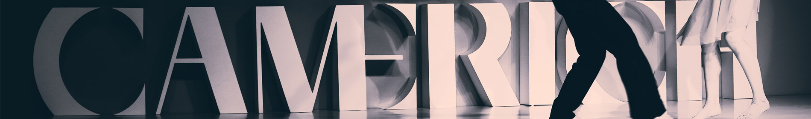
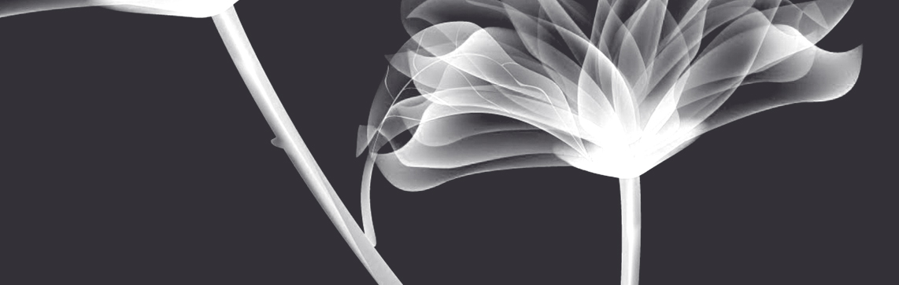
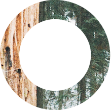
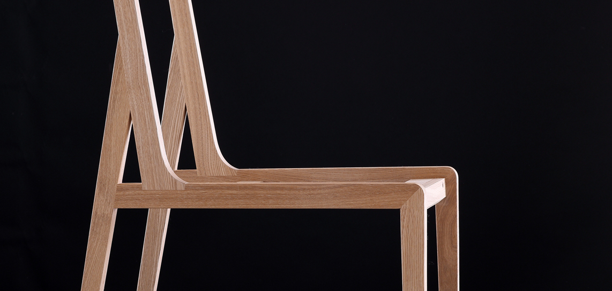

首页
关于
产品
活动
我们

|关于
首页/关于
守本真心 至简至美
总有星辰从地平线冉冉升起，锐驰就是其中一颗。
提升全世界消费者的家居生活品质是我们不懈的追求，
“让生活的每一个细节都得到关爱”，对细节的执着伴随着锐驰的成长，也滋养着每一位 消费者的生活。


点，是起点，是立场
是锐驰“人本主义设计观”的理念
点线之道
我们以点线作为基本设计元素
敢于打破常规超越平凡
线，是道路，是方向
是锐驰精神的延续

设计， 始于人， 终于人
让设计和欲望纯粹而真实地相遇
○静味人生，缔造优雅、惬意的当代生活方式，将渴望宁静的本心和包容的人生哲思灌注到每件产品中。
○守望温情，筑起悦耳目、舒身心的港湾，将人的需求作为设计灵感的不竭源泉。
○潜心未来，让设计和欲望纯粹而真实地相遇，总有不同，总有意外。
CAMERICH（锐驰）品牌诞生于2005年，是具有国际化视野的高端家具品牌，专注于打造高品质的“当代生活方式”，营销网络已覆盖全球，在英国、美国、德国、澳大利亚、比利时、新加坡等地区开设了48家品牌店，在国内30多个城市拥有45家专卖店，并且这一数字在持续更新。
锐驰信息
关于
人文
案例
留言
下载
法律声明
产品集合
沙发
椅子
茶几
桌子
床
柜子
配饰
Copyright © 2017 Beijing Triumph Furniture Co., Ltd. All rights reserved. 京ICP备06026877号